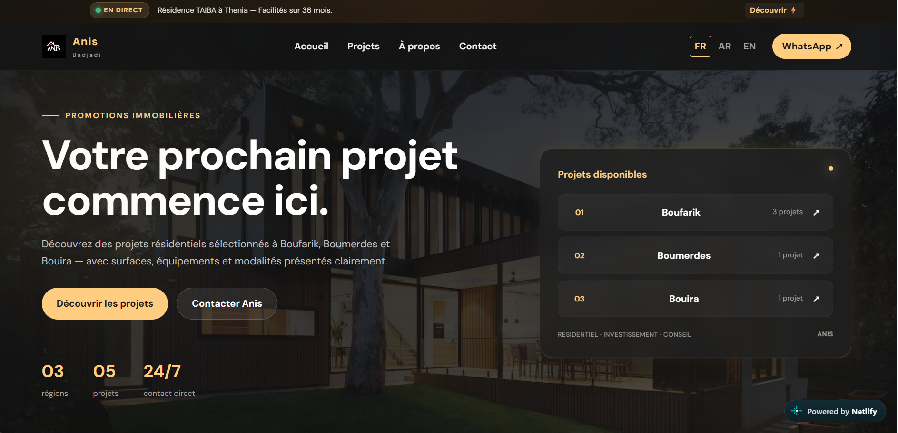

01
Web Development
Responsive websites, landing pages and digital interfaces built with a focus on clarity, performance and user experience.
Computer Science Student • Web Developer • Growth Operating
I'm Kawther, a Computer Science student and web developer exploring the intersection of technology, design and growth. I learn by building real projects, testing ideas and turning them into useful digital experiences.
Kawther Badjadi, building my skills through real projects instead of staying only in tutorials and theory.
My current focus is front-end development, UI/UX and Growth Operating — understanding not only how to build a digital product, but also how it can create value, reach people and improve over time.
I'm still learning, and that's part of the identity of this portfolio. I don't want to pretend I know everything. I want to show what I'm building, what I'm testing and where I'm going.
Computer Science student building a strong technical foundation.
Creating responsive, clean and useful web experiences.
Learning and applying growth systems through real projects.
Combining structure, visual design and user experience.
Building websites, exploring growth systems and turning what I learn into real digital projects.
Responsive websites, landing pages and digital interfaces built with a focus on clarity, performance and user experience.
Designing interfaces with structure, visual hierarchy and a clear user journey — not just something that looks good.
Exploring how research, positioning, content, offers, user journeys and experiments can work together to create measurable growth.
Taking an idea from problem → structure → design → development → launch, while continuously learning and improving.

A real-world real estate project combining website development with a broader marketing and Growth Operating case study. The goal is not only to present properties, but to think about positioning, communication and the buyer journey.
A personal digital space designed to document my journey across Computer Science, web development, design and Growth Operating.
A student-focused resource project gathering useful learning materials, references and organization tools for Computer Science students.
This is how I like to approach digital projects. I don't believe in waiting until everything is perfect before building.
Understand the problem, the people and the context before jumping into solutions.
Turn the idea into something real that people can actually see and use.
Observe what works, what doesn't and what needs to change.
Improve the system, create value and turn useful lessons into better results.
Whether it's a website, a digital project or a growth challenge, I'm always interested in meaningful projects where I can learn, build and create value.
Start a Conversation